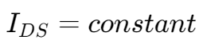

场效应管 | Field Effect Transistors (FETs)
结型场效应管 | Junction Field Effect Transistor (JFET)


结型场效应管有如下性质：
- 当 时， 饱和
- 在 饱和前，有
- 当 时， (Cut off)
- 当 ， (Pinch-off)
- ,
金属氧化物半导体场效应晶体管 | Metal Oxide Semiconductor Field Effect Transistor (MOSFET)


金属氧化物半导体场效应晶体管有如下性质：
- 当 时，MOSFET 流通
- 当有电流通过 MOSFET 时，有
脉宽调制 | Pulse Width Modulation (PWM)